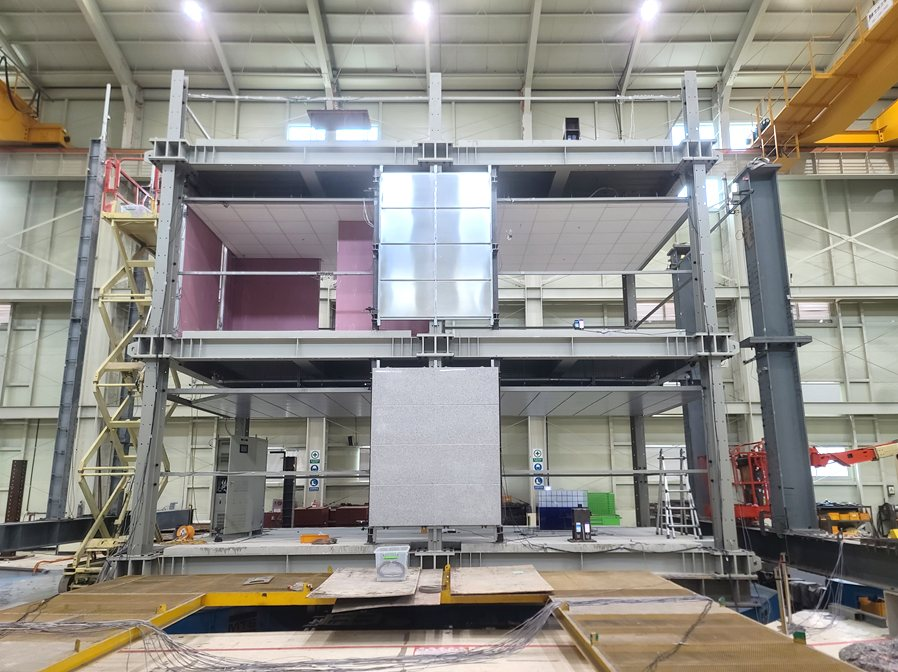
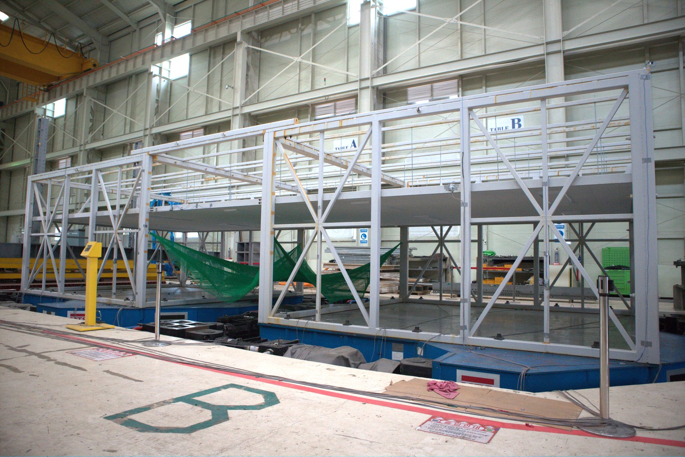
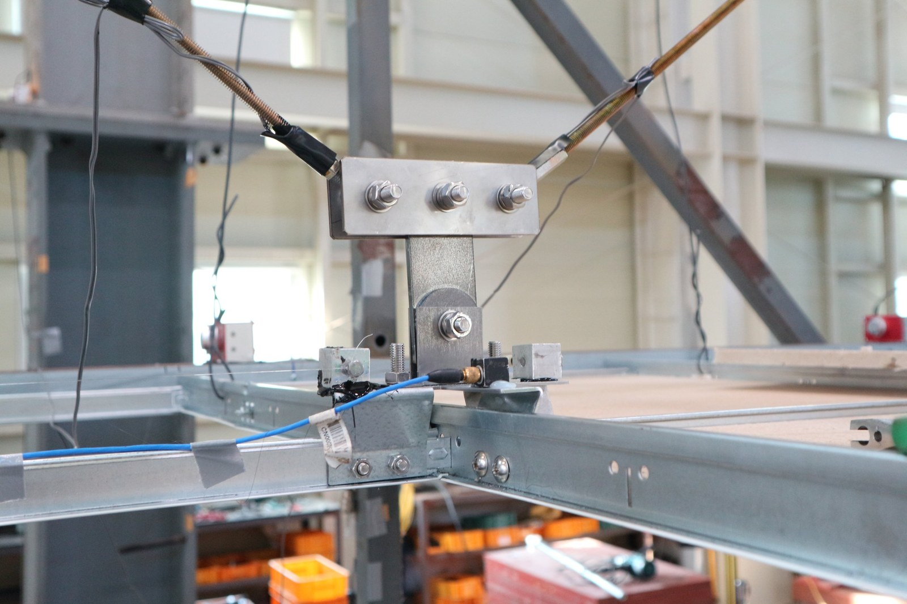
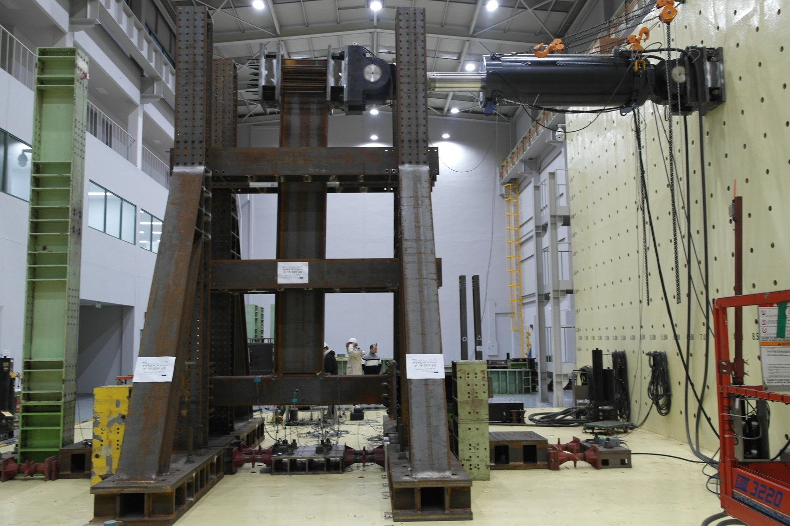
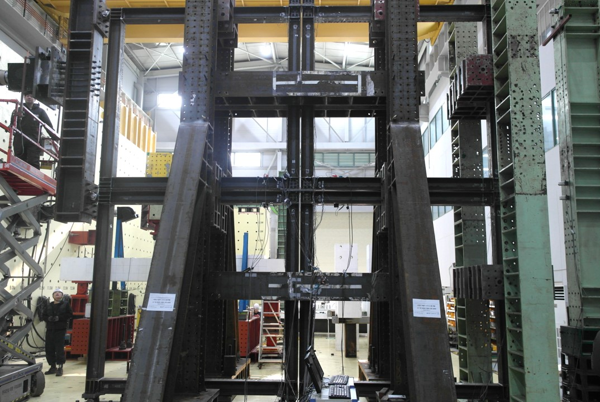
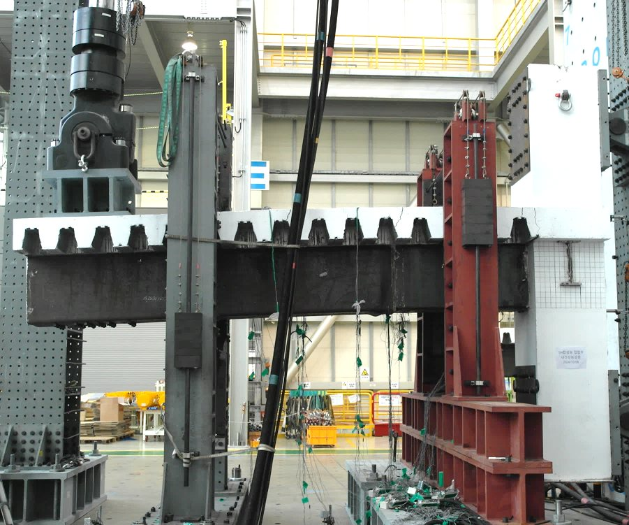
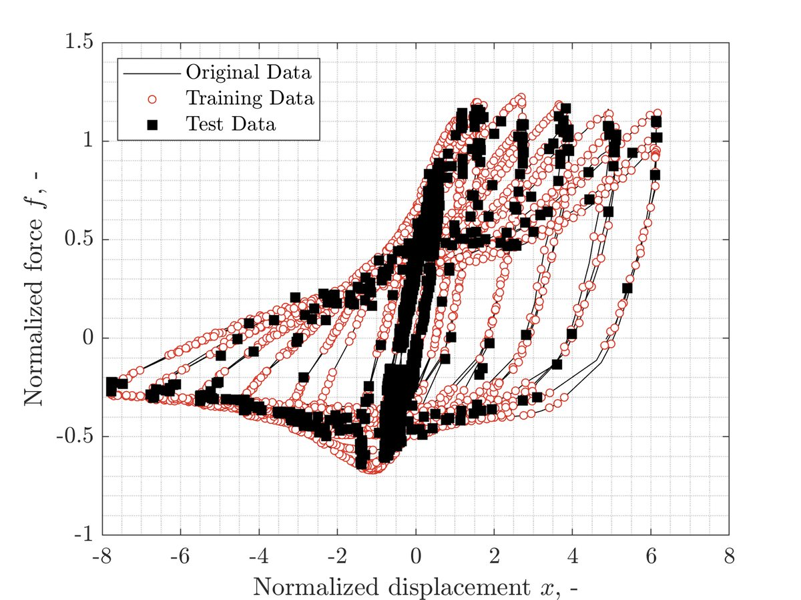

Steel Structures &
Earthquake Engineering Lab






Fig. 01 — 실대형 2층 철골모멘트골조 진동대 실험Full-scale two-story steel moment frame on the shake tableFig. 02 — 대공간 천장시스템 진동대 실험Large-scale shake-table tests of suspended ceiling systemFig. 03 — 천장시스템 보강을 위한 회전형 마찰댐퍼Rotational friction damper for suspended ceiling systemsFig. 04 — 대형 골조 반복가력 실험Large-scale frame cyclic testFig. 05 — 모듈러 골조 실대형 실험Full-scale modular frame testFig. 06 — 합성 보-기둥 접합부 반복가력 실험Cyclic test of a composite beam–column joint01 / 06
Research
(04)- 01강·합성구조Steel & Composite StructuresSteel & Composite Structures강·합성구조↗
- 02모듈러 구조Modular StructuresModular Structures모듈러 구조↗
- 03비구조요소 내진·진동제어Nonstructural Seismic & Vibration ControlNonstructural Seismic & Vibration Control비구조요소 내진·진동제어↗
- 04AI 기반 구조 모델링AI for Structural ModelingAI for Structural ModelingAI 기반 구조 모델링

↗
News
All ↗제27회 SEEBUS (대만 타이난, 12.18–19) 탑다운 보-기둥 접합부 발표 예정Upcoming: top-down beam-to-column study at the 27th SEEBUS, Tainan (Dec. 18–19)
탑다운 합성 기둥-보 시스템 논문 Journal of Building Engineering 게재 (IF 8.1, JCR 상위 7%)Top-down composite beam–column paper published in Journal of Building Engineering (IF 8.1)